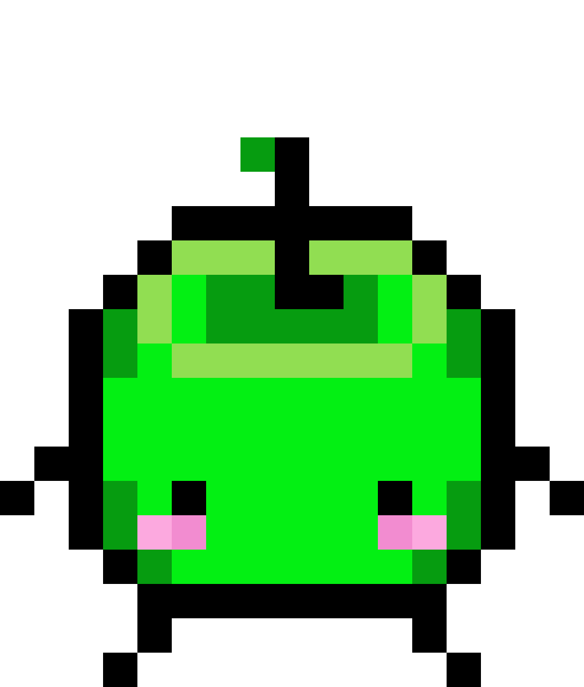

Junimo Bot, a Stardew Valley Bot
ABOUT
Junimo Bot is a Stardew Valley Bot created to provide accurate information with least amount of effort for Stardew Valley players.
It also provides numerous fun functionalities for Discord users to replicate Stardew Valley experience, such as item spawns, gifting villagers, and marrying villagers.
COMMANDS
| Command |
Description |
Example |
| j! gift <character> |
Shows loves and likes of the given character |
j! gift Shane |
| j! birthday <current date> |
Shows the next person's birthday given current date |
j! birthday Summer 4 |
| j! build <building> |
Displays the list of items needed to construct the given building |
j! build stable |
| j! bundle <item> |
Displays the bundle(s) that the given item is a requirement of. |
j! bundle daffodil |
| j! likes <item> |
Shows a list of characters who love or like the specified item. |
j! likes amethyst |
| j! schedule <character> <current date> |
Displays the schedules for the given character |
j! schedule Alex Spring 13 |
| j! fish <fish> |
Shows information of the specified fish |
j! fish eel |
| j! season <season> |
Displays a calendar of birthdays and events of the given season |
j! season Spring |
| j! bundles <item> |
Displays list of bundles and their requirements. |
j! bundles |
| j! collect <item> |
Collects the item spawned given the correct item name |
j! collect octopus |
| j! give <character> <item> |
Gives an item you own to a in-game character |
j! give Shane egg |
| j! items |
Displays the user's current inventory of items |
j! items |
| j! give <character> |
Gives an item you own to a in-game character |
j! give Shane |
| j! marry <character> |
Marries the specified character (10 hearts) with a Mermaid's Pendant. |
j! marry Abigail |
| j! divorce |
Divorces and loses all hearts with the current spouse. |
j! divorce |
| j! redirect <channel name> |
Redirects item spawns to a specified channel |
j! redirect general |
| j! spawnrate <number> |
Adjust spawn rate of item spawns between 0 and 0.2. |
j! spawnrate 0.05 |
| j! toggle <on/off> |
Toggles item spawns on or off |
j! toggle off |
| j! friends |
Displays current friendships with in-game characters on the server |
j! friends |
| j! donate |
Donate to help support our bot! |
j! donate |
| j! vote |
Vote every 12 hours to receive a Prismatic Shard. |
j! vote |